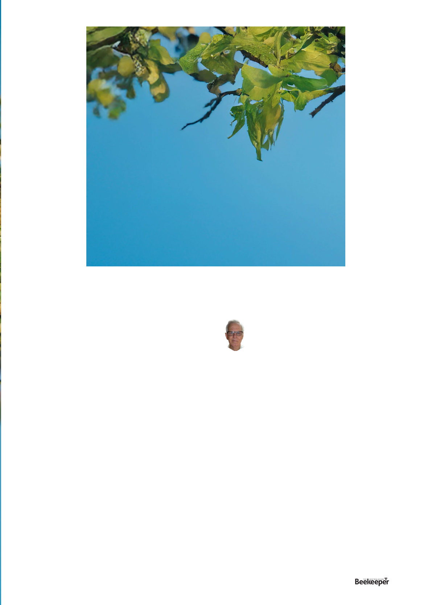

into the new box. You can put some brood into this hive, but
that is not essential. If you do add brood, make extra sure
there are no queen cells. Most of the field bees will join the
queen in the new box because it is on the old site. This is your
‘artificial’ swarm. This hive will have a higher proportion of field
bees over nurse bees, lowered levels of brood pheromone, and
plenty of space for the queen to lay so most of the strongest
drivers of the swarming impulse have been removed.
Leave most of the bees and brood in the old hive. Destroy all
but the largest queen cell. The absence of queen pheromone
in this hive will trick the bees into believing that the hive has
swarmed, and with only one queen cell left, they will not be
tempted to send out a second swarm with the virgin queen.
Leave this hive alone for two or three weeks before checking
that the new queen is laying.
‘But I don’t want more hives!’ You can recombine the hives
after the swarming season is over, or you can sell or give away
the extra hive.
Bruce Ward has been keeping bees on and off for
over 50 years. Some may remember Bruce from his
time as an Apiary Officer at Goulburn in the 1970s and
80s. He restarted beekeeping in retirement, but had
the misfortune to have his hives on the NSW Central
Coast when varroa was discovered, and his hives were
euthanised as part of the control operation. Bruce and
his wife moved to Geelong in southern Victoria to be
closer to family, and Bruce re-started from scratch. He
now has five hives kept on a relative’s small farm out of
town.
Vol. 127 | No. 4 |
| 23